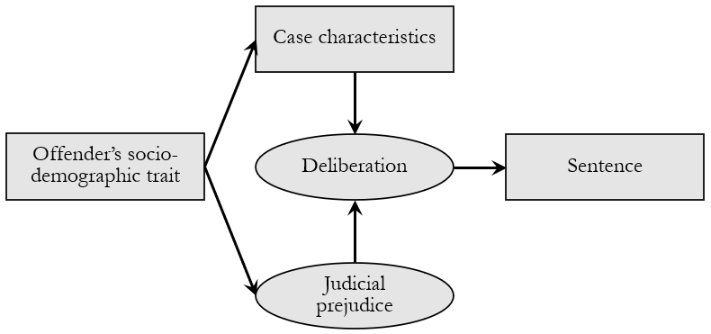
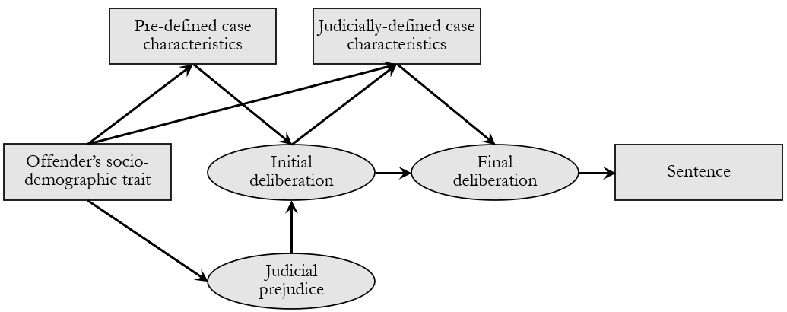
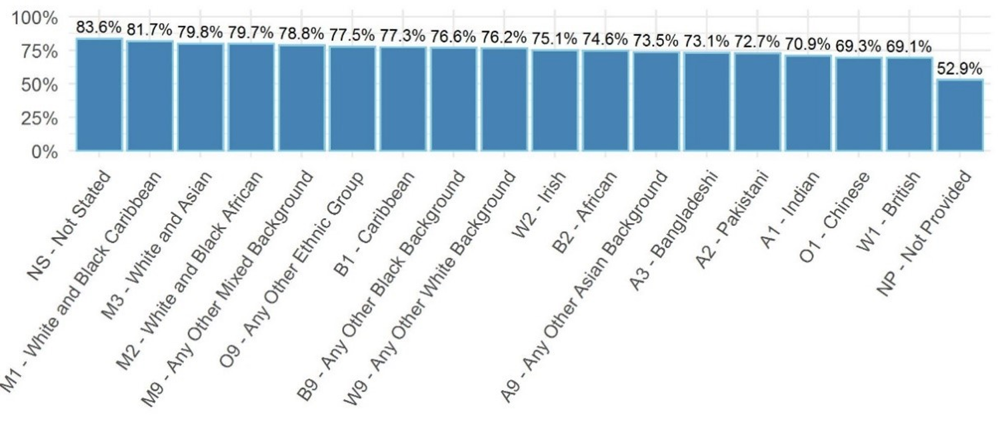
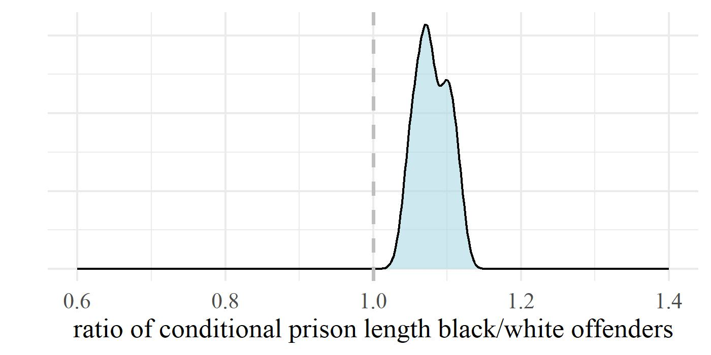
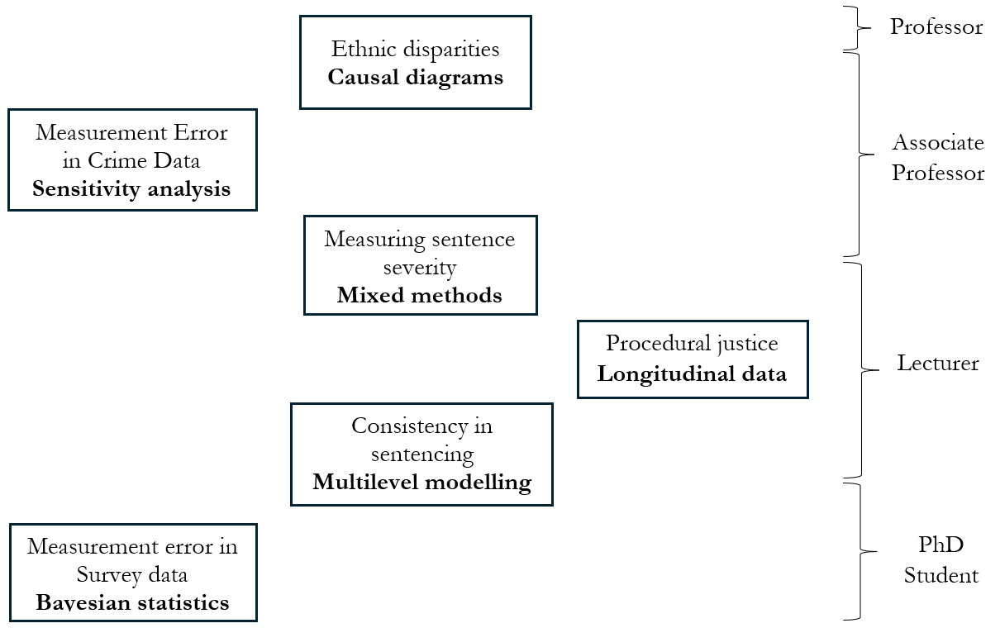
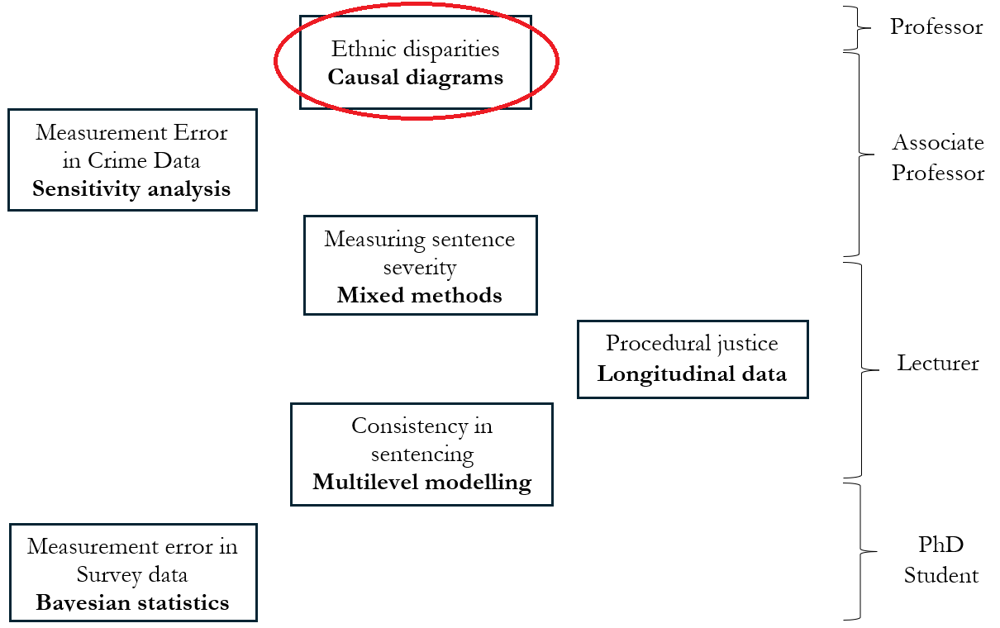

Faculty of Social Sciences
Inaugural Lecture Series 2024/25
Estimating Ethnic Disparities in Sentencing:
Methodological Challenges and a Path Forward
Jose Pina-Sánchez
Background
Sentencing
The strongest expression of the coercive powers of the state
Clear material consequences
Equally important symbolic value
Disparities in England & Wales
The Lammy Review (2017)
– 240% higher odds of custody for minority drug offenders
– side note: 2.4 odds ratio \(=\) 140% higher odds
Is this evidence of discrimination?
No definitive answer
– we have not done our job
Real-world implications
A. There is discrimination but we fail to acknowledge it
– we perpetuate a terrible injustice
B. There is no discrimination but we claim there is
– we undermine trust in the criminal justice system
– alienate minority groups
– waste efforts by focusing on the wrong crisis
Methodological challenges
Confounding bias
- Practically impossible to make ‘like-with-like’ comparisons

Post-treatment bias
We might be inadvertedly controlling away judicial prejudice
– e.g. offender’s remorse and rehabilitation potential

Misclassification & missing data
White offenders are not a homogeneous group
Different patterns of missing data depending on who identifies offender’s ethnicity

Framing bias
Research culture matters just as much
– ‘race studies’ show twice stronger disparities than other sentencing studies
Systematic cherry picking
– every new study highlights the “240% higher odds”
So, can we tell whether there is discrimination?
We can estimate some uncertainty


We can evaluate bias qualitatively
Missing legal factors isn’t a sufficient condition for statistical bias
Sentencing Council (2021) conditioned on all factors listed in their guidelines
– still found significant disparities (40% higher odds)
No missing legal factor is realistically strong enough to render those disparities non-significant
Anticipate the direction of the bias
Disparities could be understimated
– the Council controlled for mitigating factors we suspect are ‘racially-constructed’
– did not differentiate between groups of whites
We do not find evidence of bias in missing data
My conclusion
We can provide a definitive answer
– there is sentencing discrimination in England & Wales
However, the problem is not as widespread as commonly expressed
– we only see it in 1 out of 9 offence groups, drug offences
The literature is plagued with wrong results (misinformation)
– we need to change radically how we do research
How Do We Move Forward?
Invest in research methods
Every researcher should be able to identify research assumptions
– and assess how their breach could lead to bias
Empirical researchers should be able to estimate those biases
– and reflect them in the uncertainty of their findings
A Messy Trajectory


Change of research culture
Slow research
– quality over quantity
Embrace uncertainty
– acknowledge our assumptions
– trade precision for accuracy
– avoid overhyping
Open research
– registered reports
– replications
If we try hard enough, and do not fool ourselves along the way, we can answer pretty hard questions